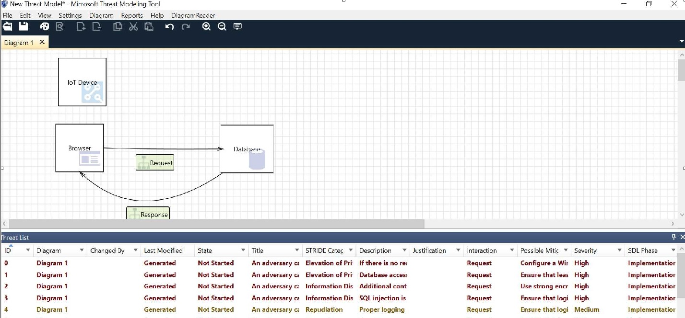

In unit 3 different approached to threat modelling were introduced.
I was mostly aware of STRIDE and DREAD but I have never used attack
trees or PASTA.
The Threat Modeling Manifesto (Shostack et al, 2020) was an
interesting adaptation of the agile manifesto in risk management
processes whereas the paper by Shevchenko et al (2018) offered a very
interesting summary of threat modelling methods which can be used in
different parts of development processes. The threat modelling tool by
microsoft is a free platform which can be used for carrying out threat
modelling activities. I
played around quite a bit with it and I used it in a couple of threat
modelling exercises at work with good results overall. I am sure there
are other tools out there with great capabilities but this was a kind
of free of charge solution for playing around with threat modelling.
Reflecting on unit 3 I think that I do understand the differences
between the threat modelling methods but I certainly need to play
around with the tools and try to apply each one of them in a particular
situation to internalise the mechanisms behind them and get a better
understanding of what can be used and where.
